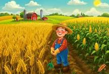
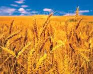
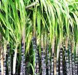

Detect wheat and sugarcane diseases using Artificial Intelligence. Helping farmers protect crops with fast and accurate analysis.
Start Detection

AI analysis for detecting wheat diseases and monitoring crop health.

Identify sugarcane health conditions and receive farming guidance.
CropGuard AI is an intelligent agricultural platform designed to help farmers monitor crop health using artificial intelligence. The system analyzes images of wheat and sugarcane leaves and identifies whether crops are healthy or affected by diseases.
The platform is developed with farmers in mind. Its simple interface allows users with limited technical knowledge to upload crop images and receive clear health results without requiring expert inspection.
By detecting diseases at an early stage, CropGuard AI helps farmers reduce crop losses, improve productivity, and make better decisions regarding crop management. This results in efficient farming practices and improved food security.
The system creates a bridge between modern AI technology and traditional agriculture by providing accessible digital solutions that support farmers and promote sustainable farming.
Identify crop problems before they become severe.
Simple design that allows farmers to easily use AI technology.
Reduce unnecessary pesticide usage and improve crop management.